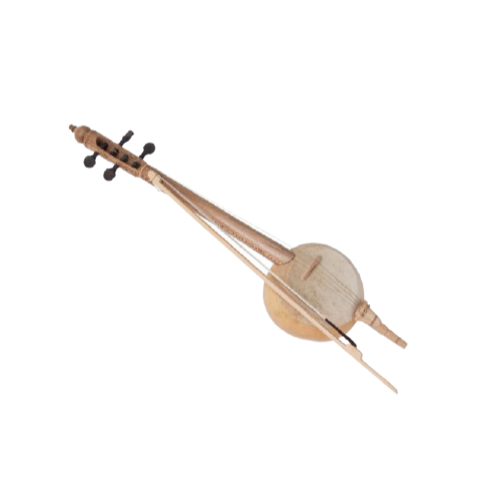

Kalimantan Utara

Gambar diatas adalah Rebab, sekilas rebab memang terlihat seperti biola yang mempunya alat untuk menggesekkan senarnya. Rebab dibuat karena adanya pengaruh budaya timur. Biasanya, Rebab digunakan untuk mengiringi upacara adat dan pada acara musik daerah. Rebab memiliki alat resonasi berbentuk bulat dan memiliki leher panjang yang terpasang.